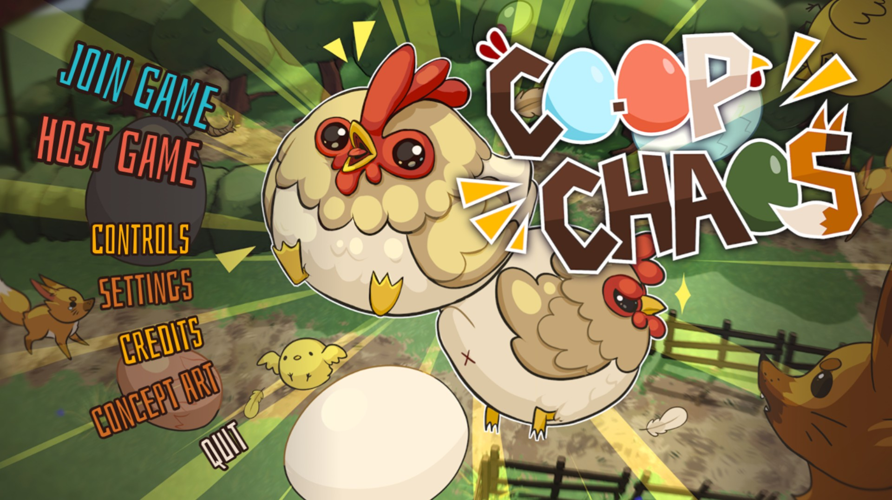
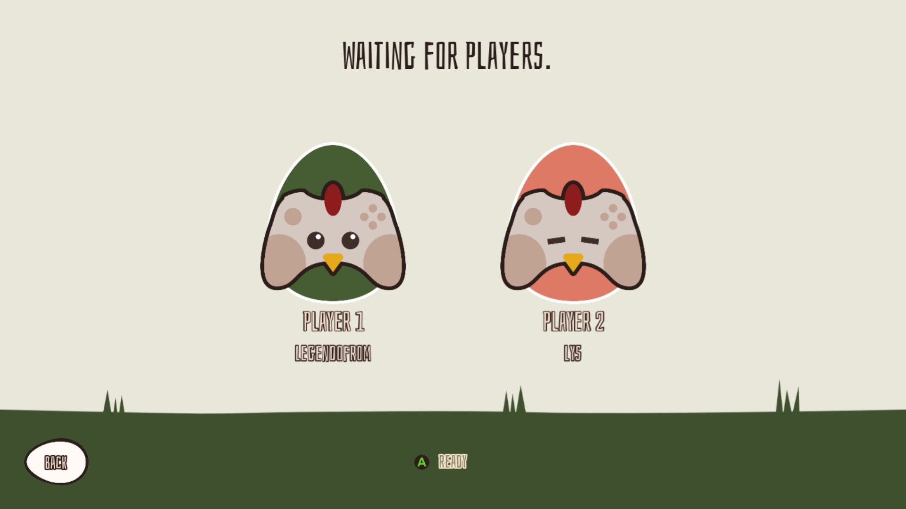
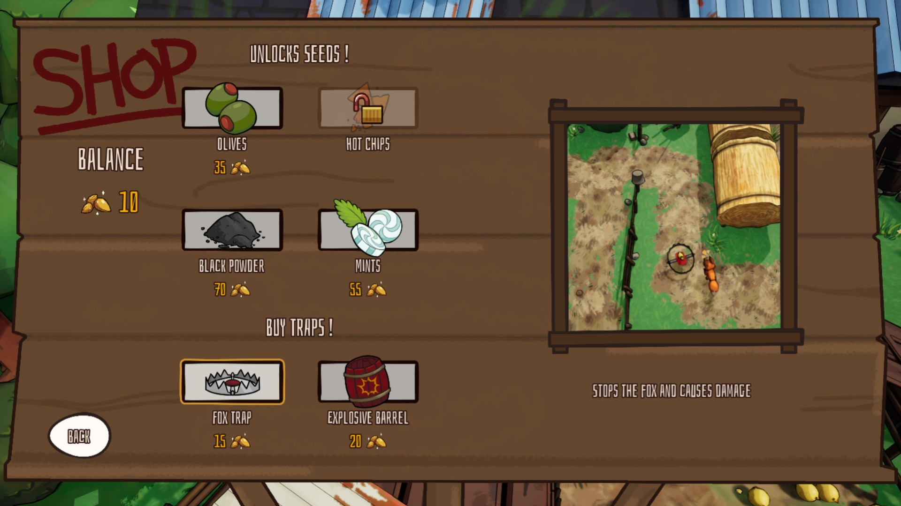
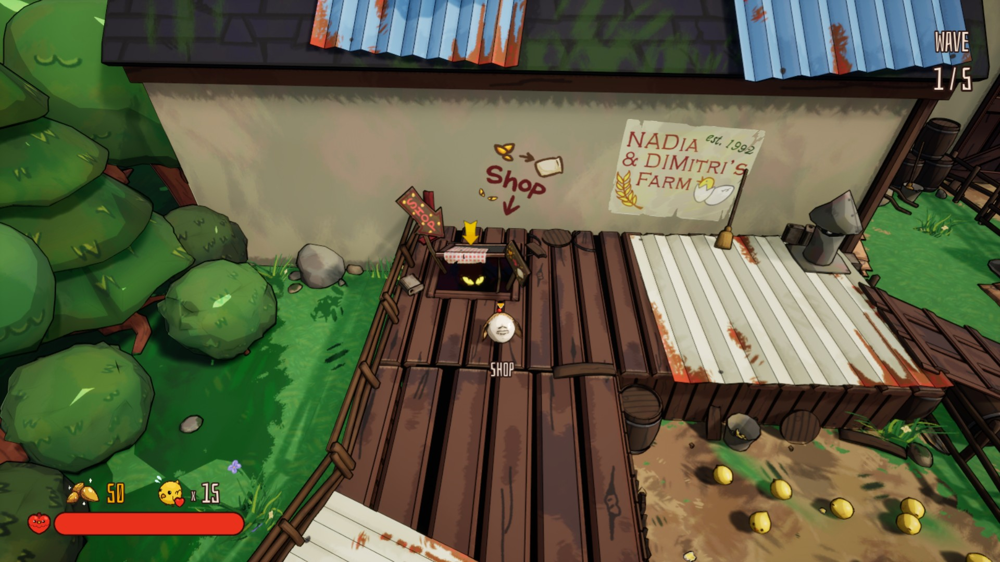
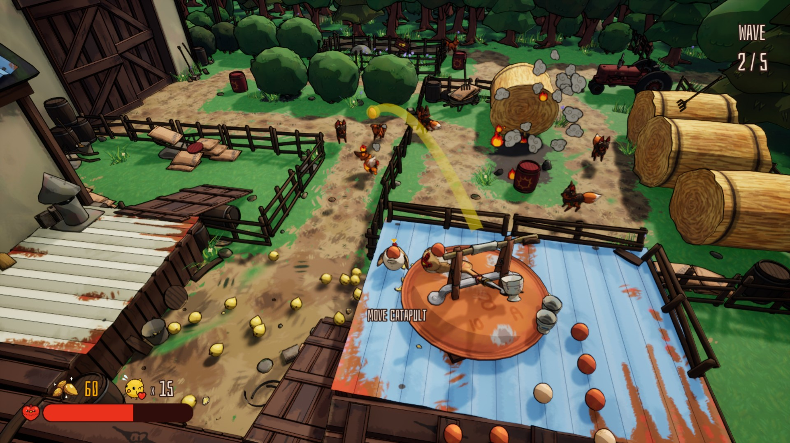
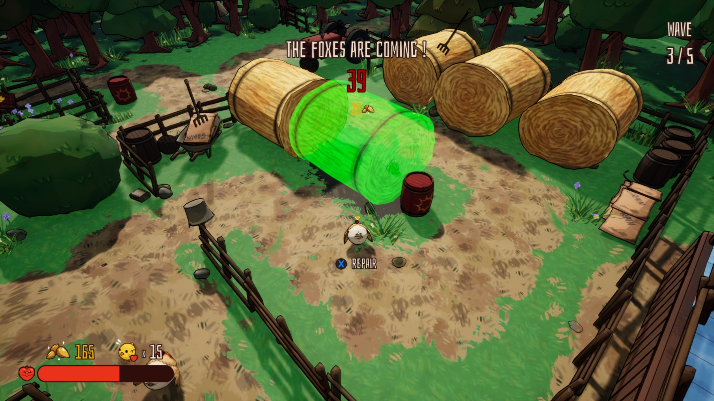

Coop Chaos
Développé dans le cadre du Concours universitaire Ubisoft 2025 et a reçu 2 nominations :
- Meilleure qualité des 3C (caméra, personnages, commandes)
- Meilleur prototype
Coop Chaos est un "tower defense" coopératif dans lequel les joueur.euses doivent catapulter des oeufs et placer des pièges pour protéger leur poulailler de hordes de renards affamés. Picorez des graines étranges, sautez sur le dos de votre coéquipier pour pondre des oeufs spéciaux et catapultez-les pour repousser les renards avant qu’ils ne fassent qu’une bouchée de vos poussins !
Dans ce projet, j'ai été responsable du game design incluant :
- Design du niveau
- Équilibrage
- Création de capacités et d'ennemis
Date de création : Mars 2025.
Crédits
Équipe
- Marie-Ève Côté : Art 2D, UI, Concept Art
- Arnaud Lescure : Art 2D, Environment/Character, Animation
- Antoine Belliard : Game Design
- Steven Gagnon : Gameplay, UI, Online Network
- Alexandre Tremblay : Gameplay
- Lydie Santos : Gameplay, UX
- Nathan Hemez : UI, VFX, Tech Art
- Léa Bouchard : AI
Superviseurs
- Yannick Francillette : professeur, DIM (UQAC)
- Hamdi Ben Abdessalem : professeur, DIM (UQAC)
- Bob-Antoine Jerry-Ménélas : professeur, DIM (UQAC)
Mentors
- Marion Trassaert : Mentor - Programmation
- Olivier Leblanc-Lacroix : Mentor - Art 3D





